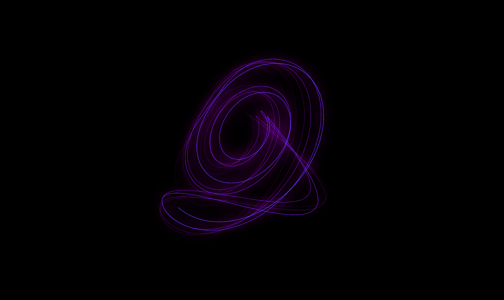

RK4: Understanding the Universe Making sense of the universe through the lens of numerical methods.Differential equations are the language of the universe. From the orbit of distant planets to aerodynamics and the fluctuations of financial markets, change is governed by these mathematical relationships. Yet, while nature writes its laws in the precise prose of calculus, solving them exactly is often impossible.
For centuries, scientists have had to rely on approximations to bring these equations to life. For many, the journey into numerical simulation begins with Euler’s method, a beautifully simple approach that steps forward in time using a straight line. But while Euler’s method is intuitive, the real world rarely moves in straight lines, causing simple simulations to quickly drift into chaos. Let's see why this happens.
In the last article about modeling a double pendulum, I showed the figure above to show how smaller time steps $\Delta t$ allow for better integration using a method called Euler's method, which uses the equation below to estimate small changes for a function.
$$f(t + \Delta t)\approx f(t) + \dot f(t)\Delta t$$
If we let $\Delta t$ shrink all the way down to $\Delta t\to0$, we would get a perfect "solution" to the differential equation. Unfortunately, at least for now, it is impossible to calculate so many little steps. Think about it: if our time steps are one millisecond ($\Delta t=0.001s$), we are already doing $1000$ calculations per second of our simulation.
You may now be thinking "Okay. But we can approximate a solution with a less infinitesimal $\Delta t$. What's wrong with that?" Well, unfortunately, this type of solution often causes a simulation to "blow up" to infinity. Let's look at it graphically
and practically, using the single pendulum as an example:
Notice how the pendulum seems to find momentum out of nowhere. Not only does this violate the law of conservation of energy; it's just plain inaccurate.
So... we've established the problem. What now?
One solution is to simply make $\Delta t$ smaller, but this comes with a computational cost. Instead, what if we could get more information about what happens between our time steps?
This is the idea behind the Runge-Kutta method, and specifically the method we'll use here: fourth-order Runge-Kutta, or RK4.
Let's start with our differential equation
$$\frac{dy}{dt}=f(t,y).$$
The equation tells us the slope of $y$ at any point $(t,y)$. If we knew the slope at every point between $t$ and $t+\Delta t$, we could simply integrate:
$$y(t+\Delta t)=y(t)+\int_t^{t+\Delta t}f(t,y(t))\ dt.$$
The problem is that we don't know the trajectory $y(t)$ inside the interval. RK4 gets around this by sampling the slope at several carefully chosen points and using those slopes to estimate the average slope over the entire interval.
The Four SlopesFirst, let's recall what Euler's method does. It looks at the slope at the beginning of the interval:
$$k_1=f(t,y).$$
We can then use this slope to predict where the function will be after a time $\Delta t$:
$$y(t+\Delta t)\approx y(t)+k_1\Delta t.$$
But this assumes that the slope stays constant throughout the entire interval. Unlike Euler, RK4 checks the slope again in the middle.
We can make an initial estimate of the midpoint using $k_1$:
$$y\left(t+\frac{\Delta t}{2}\right) \approx y+\frac{\Delta t}{2}k_1.$$
We can then evaluate the slope at this estimated midpoint:
$$\boxed{ k_2= f\left( t+\frac{\Delta t}{2}, y+\frac{\Delta t}{2}k_1 \right) }.$$
Now we have a better idea of what the slope looks like halfway through our interval. We can use $k_2$ to make another estimate of the midpoint:
$$y\left(t+\frac{\Delta t}{2}\right) \approx y+\frac{\Delta t}{2}k_2.$$
This gives us a third slope:
$$\boxed{ k_3= f\left( t+\frac{\Delta t}{2}, y+\frac{\Delta t}{2}k_2 \right) }.$$
Finally, we use $k_3$ to estimate where the function will be at the end of the interval:
$$y(t+\Delta t)\approx y+\Delta t k_3.$$
Evaluating the slope there gives us our fourth and final slope:
$$\boxed{ k_4= f(t+\Delta t,y+\Delta t k_3) }.$$
So RK4 has now sampled the slope four times:
$$\boxed{ \begin{aligned} k_1&=f(t,y)\\ k_2&=f\left(t+\frac{\Delta t}{2},y+\frac{\Delta t}{2}k_1\right)\\ k_3&=f\left(t+\frac{\Delta t}{2},y+\frac{\Delta t}{2}k_2\right)\\ k_4&=f(t+\Delta t,y+\Delta t k_3). \end{aligned} }$$
Combining the SlopesWe could simply average the four values:
$$\frac{k_1+k_2+k_3+k_4}{4}.$$
However, RK4 uses a more carefully chosen weighted average:
$$\boxed{ y(t+\Delta t) \approx y(t)+ \frac{\Delta t}{6} (k_1+2k_2+2k_3+k_4). }$$
This is known as the update equation. It relies on a specific weight sequence, $1, 2, 2, 1$. While this sequence may seem arbitrary at first, it is in fact chosen so that the Taylor expansion of our RK4 approximation matches the Taylor expansion of the true solution through fourth order.
Recall the Taylor expansion of a function:
$$y(t+\Delta t) = y(t) +\dot y\Delta t +\frac{\ddot y}{2}\Delta t^2 +\frac{y^{(3)}}{6}\Delta t^3 +\frac{y^{(4)}}{24}\Delta t^4 +\mathcal O(\Delta t^5).$$
This $\mathcal O(\Delta t^5)$ ("big O") notation describes the polynomial growth rate of the rest of the series. Because the lowest omitted degree is $t^5$, we say that RK4 has a local truncation error of $\mathcal O(\Delta t^5)$ and a global error of $\mathcal O(\Delta t^4)$.
Our differential equation gives us
$$\dot y=f(t,y),$$
so the first derivative is known. The higher derivatives can also be obtained by repeatedly differentiating $f(t,y)$ using the chain rule.
RK4 effectively constructs an approximation whose Taylor expansion agrees with this true expansion through the $\Delta t^4$ term. In other words,
$$y_{\mathrm{RK4}}(t+\Delta t) = y_{\mathrm{exact}}(t+\Delta t) +\mathcal O(\Delta t^5).$$
The error made during a single step is therefore proportional to $\Delta t^5$. After taking many steps over a fixed interval, this becomes a global error of $\mathcal O(\Delta t^4)$. This is where the "4" in RK4 comes from. For comparison, Euler's method has global error
$$\mathcal O(\Delta t).$$
This means that if we cut our timestep in half, the error from Euler decreases roughly by a factor of $2$, while the error from RK4 decreases roughly by a factor of $2^4=16$. We can therefore get substantially more accuracy without making $\Delta t$ nearly as small as we would need with Euler's method. You can see RK4 in action and compare it to Euler's method for the same $\Delta t$ using the graph below.
RK4 and the PendulumRecall from earlier the pendulum trajectory which speeds up (or "blows up") to infinity over time as Euler's method accumulates integration error.
Using RK4, we see that we no longer have this sudden explosion, and the motion is much more stable.
The improvement comes from the fact that RK4 does not blindly follow the slope at the beginning of each timestep. Instead, it checks what the trajectory is doing in the middle and at the end of the timestep before deciding how far to move.
This is particularly useful for physical systems such as pendulums, where the direction and magnitude of the acceleration can change significantly during a single timestep.
Implementing RK4Now that we understand the mathematics, let's turn it into a computer program. The first step is to write a function that describes the differential equation. For example, consider
$$\frac{dy}{dt}=y.$$
In Python, we could write:
def f(t, y):
return yWe can then implement one RK4 timestep directly from the equations above:
def rk4_step(f, t, y, dt):
k1 = f(t, y)
k2 = f(
t + dt/2,
y + dt*k1/2
)
k3 = f(
t + dt/2,
y + dt*k2/2
)
k4 = f(
t + dt,
y + dt*k3
)
return y + dt*(k1 + 2*k2 + 2*k3 + k4)/6We can then repeatedly call this function to move forward through time:
t = 0
y = 1
dt = 0.01
for i in range(1000):
y = rk4_step(f, t, y, dt)
t += dtAt every iteration, the program takes the current state, calculates the four slopes, combines them, and produces the next state.
The important thing to notice is that RK4 itself does not care what physical system we are modeling. All of the physics is contained inside the function $f(t,y)$.
RK4 with VectorsThis becomes especially useful when we start working with systems containing multiple variables.
Suppose instead of a single number $y$, our state is a vector:
$$\mathbf{x}= \begin{bmatrix} x_1\\ x_2\\ x_3 \end{bmatrix}.$$
Our differential equation might then be
$$\dot{\mathbf{x}}=\mathbf f(t,\mathbf{x}).$$
The only difference here is that the four slopes are now the vectors
$$\boxed{ \begin{aligned} \mathbf{k}_1&=f(t,\mathbf{x})\\ \mathbf{k}_2&=f\left(t+\frac{\Delta t}{2}, \mathbf{x}+\frac{\Delta t}{2}\mathbf{k}_1\right)\\ \mathbf{k}_3&=f\left(t+\frac{\Delta t}{2}, \mathbf{x}+\frac{\Delta t}{2}\mathbf{k}_2\right)\\ \mathbf{k}_4&=f(t+\Delta t, \mathbf{x}+\Delta t\mathbf{k}_3). \end{aligned} }$$
Our update function is then
$$\boxed{ \mathbf{x}_{n+1} = \mathbf{x}_n+ \frac{\Delta t}{6} \left( \mathbf{k}_1+2\mathbf{k}_2+2\mathbf{k}_3+\mathbf{k}_4 \right). }$$
A pendulum, for example, can be represented using the state
$$\mathbf{x}= \begin{bmatrix} \theta\\ \dot\theta \end{bmatrix}.$$
Recall that its equation of motion is
$$\ddot\theta=-\frac{g}{l}\sin\theta.$$
We can turn this second-order equation into two first-order equations:
$$\dot\theta=\dot\theta,\ \ \ddot\theta=-\frac{g}{l}\sin\theta.$$
More clearly, if we define
$$x_1=\theta,\ \ x_2=\dot\theta,$$
then
$$\boxed{ \dot{\mathbf{x}} = \begin{bmatrix} x_2\\ -\frac{g}{l}\sin x_1 \end{bmatrix}. }$$
This vector is our function $f(\mathbf{x})$. RK4 can therefore integrate the pendulum simply by repeatedly evaluating this function.
Read next